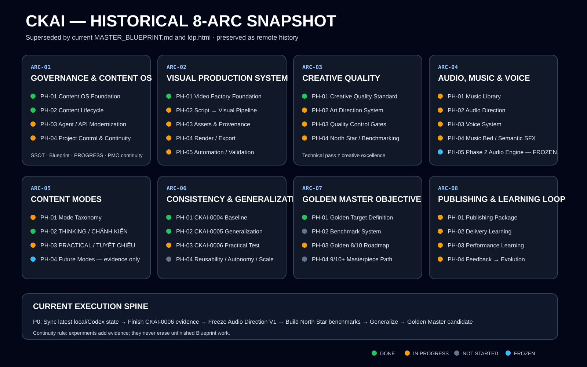

CKAI / PROJECT CONTROL / MASTER BLUEPRINT v1.0
Chánh Kiến AI — Live Project Status Board
Bản đồ tổng công trình. ARC → Phase → Task → Evidence. Video 000x là bằng chứng phát triển hệ thống, không phải side-project độc lập.
North Star
CKAI không hoàn thành khi pipeline chỉ “chạy được”. Đích là năng lực tạo video ở mức tác phẩm một cách lặp lại: market-ready ≈ 7+, Golden ≈ 8, aspirational masterpiece ≈ 9+.
Continuity rule: thử nghiệm ngắn hạn chỉ thay đổi current focus; không được làm mất backlog dài hạn.
DONE / VALIDATEDIN PROGRESSNOT STARTEDFROZEN
Current control state
8ARC blocks
31phases
0006active evidence
P0repo sync
Remote GitHub was stale versus later Codex/local work when Blueprint v1.0 was created on 2026-08-29. Reconciliation is explicitly tracked rather than assumed.

ARC-01
Governance & Content OS
PH-01 Content OS Foundation
PH-02 Content Lifecycle Engine
PH-03 AI Agent / API Modernization
PH-04 Project Control & Continuity
ARC-02
Visual Production System
PH-01 Video Factory Foundation
PH-02 Script → Visual Pipeline
PH-03 Asset Layer & Provenance
PH-04 Rendering & Export
PH-05 Production Automation & Validation
ARC-03
Creative Quality & Art Direction
PH-01 Creative Quality Standard
PH-02 Art Direction System
PH-03 Quality Control Gates
PH-04 North Star & Benchmarking
ARC-04
Audio, Music & Voice System
PH-01 Music Library
PH-02 Audio Direction
PH-03 Voice System
PH-04 Music Bed & Semantic SFX
PH-05 Phase 2 Audio Engine — FROZEN until direction V1
ARC-05
Content Modes & Framework
PH-01 Mode Taxonomy
PH-02 THINKING / CHÁNH KIẾN
PH-03 PRACTICAL / TUYỆT CHIÊU
PH-04 Future Modes — evidence only
ARC-06
Production Consistency & Generalization
PH-01 CKAI-0004 Production Baseline V1
PH-02 CKAI-0005 Generalization Test 01
PH-03 CKAI-0006 Practical / Consistency Test
PH-04 Reusability, Autonomy & Scale
ARC-07
Golden Master & Artwork Objective
PH-01 Golden Target Definition
PH-02 Benchmark System
PH-03 Golden 8/10 Roadmap
PH-04 9/10+ Masterpiece Path
ARC-08
Publishing, Delivery & Learning Loop
PH-01 Publishing Package
PH-02 Delivery Learning
PH-03 Performance Learning
PH-04 Feedback → System Evolution
Immediate Priority Stack
- P0: Reconcile latest local/Codex implementation with GitHub.
- P0: Complete CKAI-0006 and map findings into ARC-02 / ARC-05 / ARC-06.
- P0: Clarify Audio Direction V1 and archive licensed music assets before Audio Engine.
- P1: Populate Creative North Star / benchmark references.
- P1: Measure manual handholding and prove generalization before scaling automation.
- P1: Establish real publishing/performance evidence and close the learning loop.
Open full canonical MASTER_BLUEPRINT.md · Open PROGRESS.md · Repository